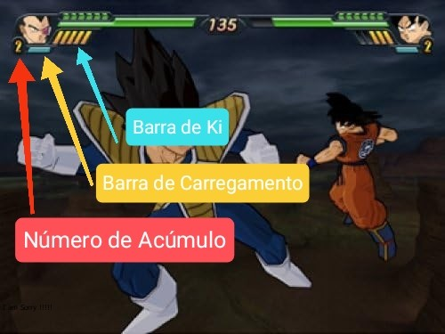

DBZ: Budokai Tenkaichi 3 é considerado um dos melhores jogos de DBZ pelos seus fãs, e isso se deve a uma gama de fatores encontrados
na sua própria jogabilidade, que foi desenvolvida de forma caprichosa e bem flúida. Devido a esses aspectos, a própria comunidade de fãs, de modo geral,
consolida o game como sendo superior (em várias coisas, entretanto, neste caso, a jogabilidade de combate é a principal) em relação aos outros jogos da fránquia DB.
Diante disso, os elementos essenciais da jogabilidade de combate são os seguintes:
Pespectiva 3D: o jogo foi construído em torno de um ambiente totalmente 3D, permitindo que combate ocorre em arenas tridimensionais e que os jogadores possam se mover livremente pelo cenário, de modo a elaborar estratégias de confronto.
Ataques básicos e Especiais: os jogadores podem realizar ataques corpo a corpo simples, como socos e chutes, além de ataques à distância com bolas de energia (Ki blasts). Esses golpes básicos podem ser encadeados em combos. Já os ataques especiais estão vinculados às habilidades icônicas dos personagens do anime, como, por exemplo, o kamehameha.
Gerenciamento de Ki: a barra de Ki é um recurso importante, pois é ele quem dita quando é possível utilizar ataques especiais e influencia na velocidade de movimentação no campo de batalha.
Transformações: muitos personagens podem se transformar durante a luta (como o Broly virando o Lendário Super Saiyajin). Essas transformações modificam o poder do personagem e marcam momentos épicos do anime. Além do mais, dentro desse conceito, há a possibilidade de realizar fusões.
Sistema de Defesa: no game, é possível bloquear ataques, esquivar, realizar contragolpes e teletrasnportar. Isso tudo requer estrátegias de uso, tornando-se complexo tanto quanto realizar ataques.
Arena Dinâmica: uma coisa legal é que as arenas do game são mutáveis, então, dependo do ataque, o espaço pode ser destrúido.
Variedade de Personagens: o game consta entre 150-160 personagens dos mais diversos tipos. Alguns requerem conhecimentos específicos para serem desbloqueados. De modo geral, cada lutador tem seu próprio estilo de luta, habilidades e combos. Isso dá ao player um lote enorme de opções de gameplay.
No geral, é isso. Entretanto, é óbvio que há mais coisas a citar, como, por exemplo, a troca de personagens durante a batalha, contudo, como mencionado, é apenas uma visão genérica da jogabilidade de combate.
Casa do mestre Kame destruídaEsquiva do Goku contra o golpe do Majin Vegeta
Principais Mecânicas
Os players podem montar esquemas para saírem vitoriosos nas batalhas, contudo tais esquemas estão em função das diversas mecânicas que o game apresenta.
Nesse sentido, mesmo que a mecanização do jogo seja complexa, é possível citar as principais mêcanicas.
É bom lembrar que a mecânica quanto a jogabilidade estão interligados diretamente. Então, não se assuste caso algo seja repetitivo. Na realidade, aqui haverá um aprofundamento de alguns aspectos do tópico 1. Vamos lá!
Sistema de Energia
O game conta com um sistema de Ki, que, basicamente, é a energia que os personagens utilizam para realizarem seus Ki blasts, ataques especiais, a própria movimentação na arena e etc.
Ou seja, o Ki é a energia que permite realizar uma gama de ações durante a batalha. Um detalhe importante é que a velocidade de carregamento do Ki depende de cada personagem.
Geralmente, a tal energia é disposta em 5 barras. Então, ao soltar uma bola de energia ou um ataque especial, o Ki pode diminuir consideravelmente.
Uma coisa outra coisa importante a dizer é que ele pode alterar o dano imposto ao oponente, e isso depende justamente de como esta a Ki Bar.
Um componente interessante do sistema de energia é a reserva de Ki, que, simplesmente, é uma numeração e uma barra de carregamento indicando o acumulo de energia e o processo de reserva desta respectivamente.
Isso é muito utilizado para realizar transformações.
Em suma, dominar a energia é essencial para garantir a vitória.

Sistema de Ki composto pelos 3 elementos principais
Sistema de Transformações
A transformação nada mais é do que a implementação da mudança de cor do cabelo... Ou melhor, é a alteração de um estado para outro.
Sendo mais exato, é quando um personagem, por exemplo, o Goku sai da sua forma normal e muda-se para um Super Saiyajin.
Esta é uma mecânica muito importante, pois incorpora fielmente as diversas formas que os personagens têm. Embora, é importante dizer
que nem todos podem mudar de forma, como, por exemplo, a Android 18.
Uma outra coisa legal é que as transformações não alteram apenas a aparência do personagem, mas, também, o seu poder de modo geral (novos ataques, especiais, combos, etc).
Para se transformar, geralmente, utiliza-se o botão R3 solo, entretanto algumas formas requerem o uso desse botão combinado com algumas das seguintes setas: ↑↓←→. Além do mais
é necessário que o número de acúmulo esteja em algum valor, por exemplo, 2, para que seja possível mudar de forma.
Ademais, algumas das transformações podem ser desfeitas, e isso é relativamente bom.
Para resumir as transformações, a seguinte lista pode ser usada:
Super Saiyajin: geralmente, é a transfomração mais comum presente no game, principalmente pela mudança na cor do cabelo.
Oozaru: alguns personagens são capazes de se transformar em Macacos Gigantes. Por exemplo, o Vegeta.
Fusão: o game consta com as principais fusões do anime: a Potara (conhecida pela utilização dos brincos) e a Metamoru (conhecida pela dança icônica).
Um vídeo que inclui todas as transformações do game
Sistema de Ataques
Os ataques podem ser Básicos ou Especiais. Os básicos envolvem socos ou chutes, que podem ser encadeados nos chamados combos, Ki Blasts e etc.
Já os ataques especiais são aqueles que incorporam as habilidades ou poderes clássicos do anime, por exemplo, Garlick Ho, Genki Dama, etc.
Uma detalhe interessante é que o game permite a colisão entre certos ataques, por exemplo, choques de 'kamehamehas'.
No game, os ataques especiais estão em função do Ki e podem ser Simples ou Ultimates. Os simples são especiais mais comuns, como, por exemplo, um kamehameha. Já os especiais ultimates são aqueles poderes mais marcantes de cada personagem, como, por exemplo, o Final Flash do Vegeta.
Obviamente, isso é apenas um resumo, pois visualizando no game, os nomes são diferentes, envolvem subclassificações, especificações bem rígidas e uma coleção de outras coisas.
Genki Dama sendo lançada, caracterizando um Especial Ultimate
Sistema de Defesas
No game, as defesas são tão importantes quanto os ataques, uma vez que defender estes corrobora positivamente para vencer uma match (partida).
As defesas mais comuns são os bloqueios de ataques, esquivas, teletransporte (sim, isso é um componete do sistema de defesa) e defesas seguidas de contragolpes.
Cada uma delas pode ser utilizada no game de forma estratégica. Por exemplo, é possível direcionar o bloqueio para algum lugar, evitando, assim, ataque superior, central ou inferior.
Dentro de tal sistema, o teletransporte é muito utilizado para esquivar de ataques especiais simples, além de ser combinado com os contragolpes.
No mais, o sistema defensivo pode ser bastante explorando em cada aspecto e nas suas variações em relação aos personagens, a fim de garantir vitórias ao longo do game.
Esquiva do Goku sendo aplicada contra o Vegeta
Ações Padrões a Todos os Personagens
É perceptível que há uma gigantesca variededade de personganes no game, cada qual com às suas próprias mecânicas, especificidades e etc. No entanto, é possível criar uma coleção de ações comuns para todos eles, e isso implica dizer que cada char foi construído pernsando em uma mesma classe de comportamentos.
Nesse sentido, a lista seguinte exibe e descreve algumas dessas ações.
Ataque simples: como já dito, são os socos ou chutes. Para realizar, basta segurar (combos) ou apertar ■.
Ki Blast: embora tenha sido definido como ataque simples, vale a pena destacar individualmente. São bolas de energia (ou alguma outra coisa) lançadas. Para realizar, basta segurar (encadeamento) ou apertar ▲.
Movimentação: cada personagem pode se movimentar no espaço tridimensional. Para realizar, basta mover, geralmente, o analógico (a famosa machinha) esquerdo.
Carregar o Ki: é possível carregar o Ki para todos os chars. Para isso, basta segurar L2.
Voar: emulando o anime, é viável voar. Para isso, basta segurar (aumenta a velocidade de vôo) ou apertar R1.
Aterrissar: oposto ao vôo, isso é realizável. Para isso, basta segurar (será mais rápido) ou apertar o R2.
Defender: opondo-se ao ataque, a defesa é executável. Para isso, basta segurar o ●.
Ataque especial: nesse caso, é possível realizar ataques especiais simples e ultimates, aqueles são feitos pelas combinações entre R2 + ↑ ou ▲, enquantos os ultimates são feitos através da combinação de R2 + ↓ + ▲.
Em suma, essas são as ações genéricas a todos os personagens. Embora, algumas tenham certas especificações, o conteúdo explicitado foca nas essenciais em si.